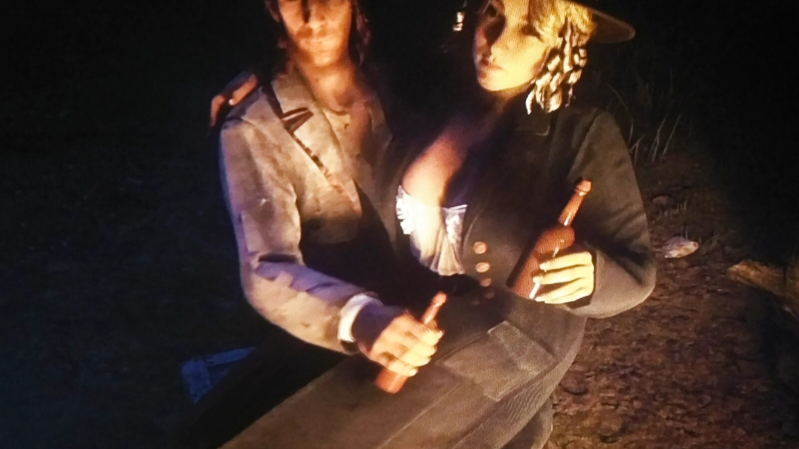
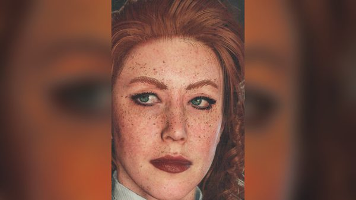
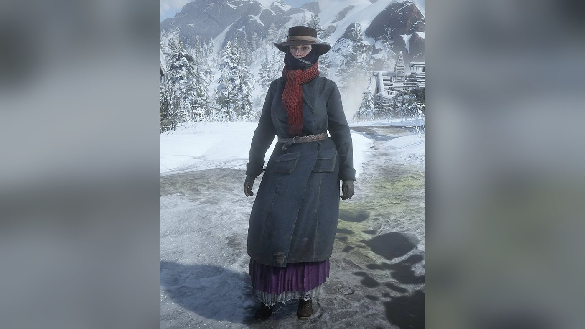
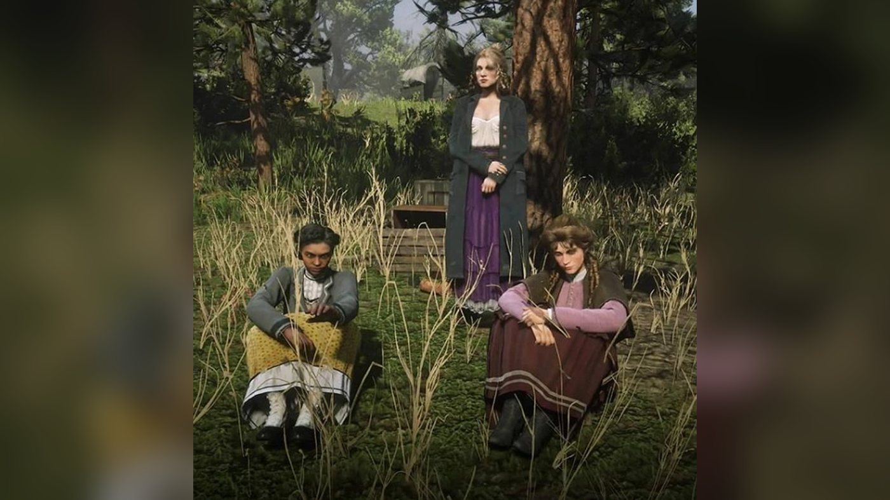
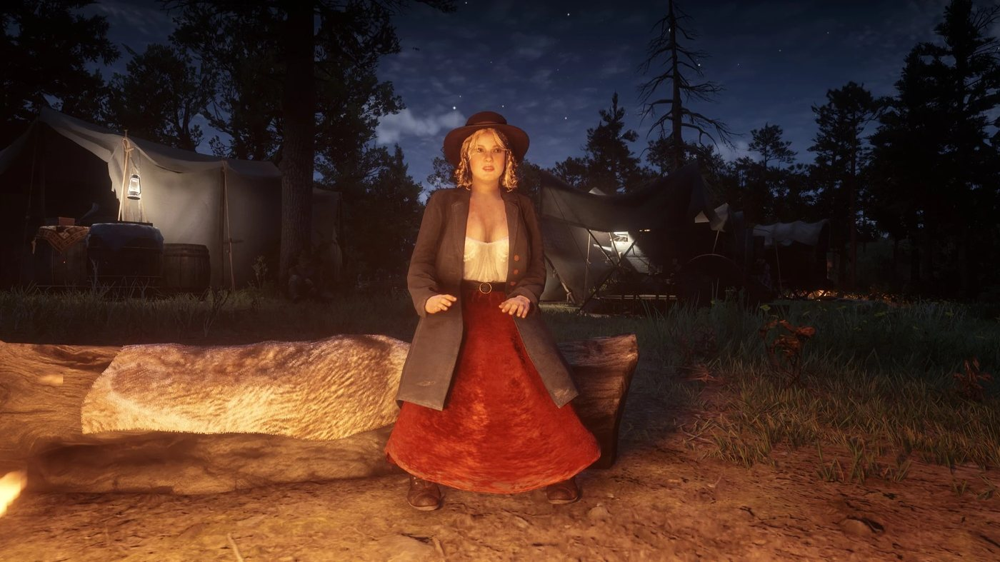
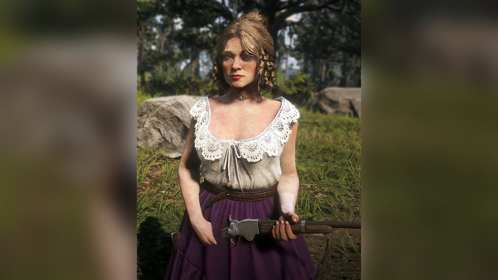
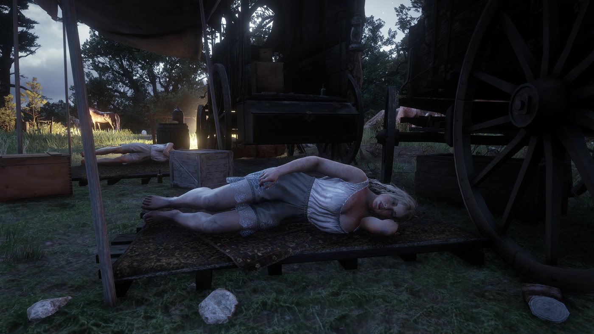
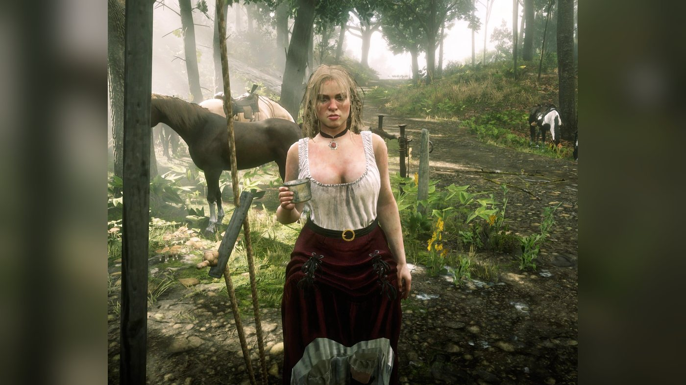
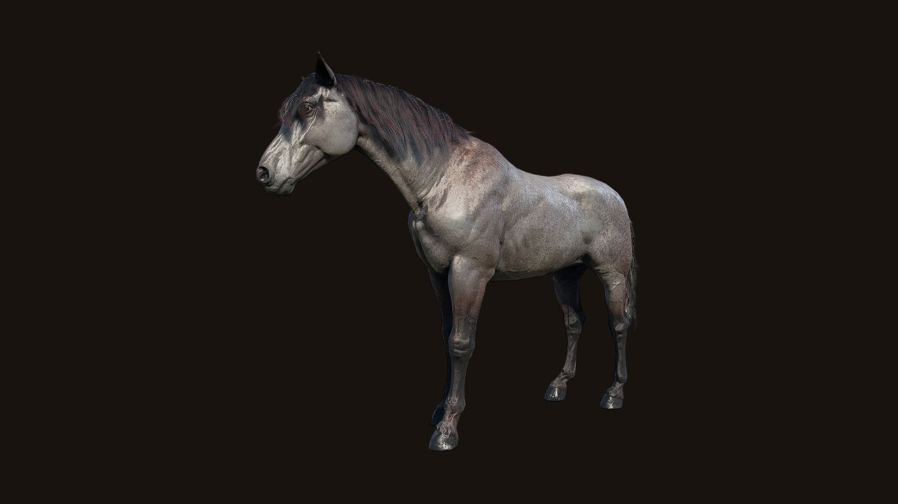

Personnage · Gang Van der Linde
Karen Jones
Karen Jones est un personnage secondaire de Red Dead Redemption 2 (2018), dont l'action se déroule en 1899. Arnaqueuse et femme de main du gang Van der Linde, elle commence à s'intéresser à la banque de Valentine pendant le chapitre de Horseshoe Overlook. Elle prépare le coup avec Bill Williamson, puis braque la banque avec lui, Lenny Summers et Arthur Morgan dans "Sodom? Back to Gomorrah", pendant le chapitre de Clemens Point. Elle a une brève liaison avec Sean MacGuire. À partir du chapitre de Clemens Point, elle boit de plus en plus, et elle quitte la bande à Beaver Hollow, au moment où tout s'effondre. Son sort n'est jamais montré : en 1907, Tilly Jackson écrit qu'elle croit l'alcool responsable de sa mort.
Elle est interprétée par Jo Armeniox, actrice américaine.
- Nom
- Karen Jones
- Naissance
- Non précisée dans le jeu (en 1899, Arthur lui donne environ vingt-cinq ans ; le Red Dead Wiki indique le milieu des années 1870)
- Statut
- Inconnu après 1899 ; en 1907, Tilly Jackson écrit qu'elle n'a jamais su ce qu'elle était devenue, mais qu'elle croit que l'alcool l'a tuée
- Nationalité
- Américaine
- Affiliation
- Gang Van der Linde (jusqu'en 1899)
- Rôle
- Arnaqueuse et femme de main
- Cheval
- Old Belle
- Jeux
- Red Dead Redemption 2
- Voix
- Jo Armeniox (voix et capture de mouvement)
Biographie
Origines
Les jeux ne donnent ni sa date de naissance ni la date de son arrivée dans la bande Van der Linde : on sait seulement qu'elle en fait partie avant 1899. Un coup plus ancien est connu. D'après le Red Dead Wiki, Arthur Morgan évoque, dans un échange facultatif de "Sodom? Back to Gomorrah", le braquage d'une banque de Tucson, en Arizona, au milieu des années 1890, avec Javier Escuella et Karen. Karen était entrée dans la banque déguisée en religieuse, deux pistolets cachés sous ses vêtements. La page du wiki consacrée à Karen précise qu'elle a tiré dans le genou de quelqu'un pendant l'opération. Le braquage a réussi.
Red Dead Redemption 2 (1899)
Chapitre 1 : Colter
Après l'échec du braquage du ferry à Blackwater, la bande se réfugie dans la neige, à Colter, une ville minière abandonnée. Dans "Outlaws from the West", dès que le groupe entre dans la cabane principale, Susan Grimshaw envoie Karen chercher toutes les couvertures disponibles. À la fin de la mission, Dutch van der Linde présente Sadie Adler, que les O'Driscoll viennent de rendre veuve, et demande à Tilly Jackson et à Karen de la réchauffer et de lui servir à boire. Le Red Dead Wiki cite aussi Karen dans "Enter, Pursued by a Memory" et dans "Eastward Bound", la mission où la bande descend des montagnes jusqu'à Horseshoe Overlook. Elle n'a aucune réplique dans la transcription de l'une ou l'autre.
Chapitre 2 : Horseshoe Overlook
"Polite Society, Valentine Style" commence quand Arthur réveille Uncle et lui propose une virée à Valentine. Karen demande à Arthur de les emmener, elle, Tilly et Mary-Beth Gaskill. Mary-Beth explique que toutes trois sont coincées au camp depuis deux semaines. Quand Arthur demande si Miss Grimshaw peut se passer d'elles, Karen se moque de lui parce qu'il s'inquiète des corvées, et il cède. Sur le chariot, les femmes entonnent une chanson paillarde à la demande d'Uncle. Si Arthur refuse d'aider un cocher dont les chevaux se sont détachés, Karen demande à Uncle, puis à Arthur, pourquoi ils ne l'ont pas aidé. Aux abords de Valentine, Tilly se demande s'il aurait fallu inviter Molly O'Shea ; Karen répond que Molly est désormais trop grande dame pour elles et pour le vrai travail. En ville, les femmes se séparent pour chercher des pistes, pendant qu'Arthur et Uncle vont au magasin général.
Plus tard, Mary-Beth apprend à Arthur que, d'après elle, Karen et Tilly sont parties à l'hôtel lever des hommes ivres pour les dépouiller. Après avoir réglé son compte à un homme qui malmène Tilly dans la rue, Arthur se rend au Saints Hotel. Karen est à l'étage, dans la chambre 2B, dont le patron de l'hôtel donne le numéro à Arthur s'il le lui demande. Elle crie contre un client qui la frappe en la traitant de voleuse. Arthur enfonce la porte et se bat avec l'homme, qu'il peut assommer ou étrangler. Karen reconnaît qu'elle a voulu le rouler et qu'elle s'y est mal prise. Elle raconte à Arthur que le client se vantait à propos de la banque : les banques de petite ville rapportent rarement grand-chose, dit-elle, mais Valentine est une ville d'élevage où l'argent liquide abonde par moments. Arthur lui demande de continuer à se renseigner. Dehors, elle le remercie, tout en précisant qu'elle n'aime pas qu'on vienne la sauver. À Tilly, elle répond que l'homme s'est contenté de la frapper.
De retour au camp, Molly reproche à Karen ce qu'elle a dit d'elle (voir Relations). Quand Sean MacGuire est ramené après avoir été arraché aux chasseurs de primes dans "The First Shall Be Last", la bande fait la fête, et Karen s'éclipse avec lui (voir Relations). Dans "Who is Not Without Sin", si Arthur passe près d'elle en portant jusqu'à sa tente le révérend Swanson, ivre, elle peut lâcher que le révérend devrait apprendre à tenir l'alcool. Le projet de braquage ne voit pas le jour pendant ce chapitre. Après la fusillade de "The Sheep and the Goats" à Valentine, la bande doit quitter Horseshoe Overlook pour Clemens Point, au bord du lac Flat Iron, en Lemoyne.
Chapitre 3 : Clemens Point
Karen n'a pas renoncé à la banque de Valentine et, à Clemens Point, elle associe Bill Williamson à son projet (voir Relations). Dans "Sodom? Back to Gomorrah", Bill appelle Arthur et lui explique qu'ils préparent le coup depuis Horseshoe Overlook, jusqu'à ce que les ennuis d'Arthur à Valentine s'en mêlent. Quand Bill se plaint qu'on le traite d'idiot pour ses erreurs alors qu'on met celles d'Arthur sur le compte de la malchance, Lenny Summers et Karen lui donnent raison. Karen demande alors franchement à Arthur de braquer la banque avec eux. Elle explique qu'à quatre, ils peuvent la prendre s'ils font vite, que la loi n'arrivera que s'ils s'attardent, et que la fin des ventes de bétail promet beaucoup d'argent. Arthur accepte d'aller voir, et Karen part quitter ses vêtements de tous les jours.
En chemin, Bill expose le plan : Karen entre la première pour faire diversion, et les hommes suivent. Karen se dit capable de jouer soit la petite égarée, soit la catin ivre, et précise qu'elle n'a vu que deux gardes en repérant la banque. Dans des conversations facultatives, elle propose un arrêt pour du whisky, qu'Arthur repousse à après le coup, et l'interroge sur la querelle entre les Gray et les Braithwaite, dont Arthur dit que c'est l'affaire de Dutch et de Hosea Matthews. Dans un autre échange facultatif, Lenny confie à Arthur qu'il a dit aux autres qu'ils avaient besoin de lui. À Valentine, le joueur choisit son numéro. En jeune fille perdue, elle sanglote devant le caissier qu'un homme lui a juré son amour et promis d'en faire une dame, qu'elle attend un enfant et qu'elle ne veut pas retourner à l'hospice des pauvres. En catin, elle joue l'ivresse et accuse le caissier de faire semblant de ne pas la connaître.
Une fois le personnel distrait, Karen sort son arme et ordonne à tout le monde de lever les mains, et Arthur, Bill et Lenny font irruption. Lenny lui donne la clé, et elle ouvre la porte derrière le comptoir. Pendant qu'Arthur force le caissier à ouvrir la salle des coffres, puis crochète les coffres ou les fait sauter à la dynamite, Karen surveille les otages et va vérifier l'entrée de la banque. Si les hommes de loi se rassemblent dehors, ce qui arrive quand les coffres sautent, elle sort la première, les mains en l'air, en s'excusant d'une terrible erreur, puis dégaine et ouvre le feu, et les quatre se fraient un chemin à coups de feu jusqu'aux chevaux. Si les coffres ont été ouverts sans bruit, c'est elle qui ouvre la marche vers la sortie. Un train qui passe permet à la bande de semer les hommes de loi, et l'argent est partagé. La page de la mission chiffre la récompense d'Arthur à 2 500 dollars.
Dans "Blessed are the Peacemakers", les O'Driscoll capturent Arthur lors d'un prétendu pourparler. Il s'échappe et regagne Clemens Point, où il s'effondre. Mary-Beth, Karen et Dutch sont les premiers à le trouver, et Dutch appelle à l'aide Miss Grimshaw et le révérend Swanson ; Arthur est ensuite porté jusqu'à sa tente. Sean est ensuite abattu dans l'embuscade de Rhodes, dans "A Short Walk in a Pretty Town" ; Karen n'y assiste pas. Le Red Dead Wiki la cite aussi dans "Blood Feuds, Ancient and Modern" et dans "The Battle of Shady Belle", dont les pages ne lui attribuent aucun rôle particulier. Dans la seconde, les agents de la Pinkerton Andrew Milton et Edgar Ross se présentent à Clemens Point. Milton offre aux autres trois jours pour disparaître si Dutch se livre. La bande refuse et s'installe à Shady Belle, une demeure de plantation près de Saint-Denis qu'Arthur et John Marston ont débarrassée des Lemoyne Raiders.
Chapitre 4 : Saint-Denis
À Shady Belle, Karen est souvent ivre au camp, ce qui inquiète Tilly (voir Relations). Quand Jack Marston est ramené de la demeure d'Angelo Bronte dans "Angelo Bronte, A Man of Honor", elle fait partie de ceux qui l'accueillent autour du feu, et elle boit beaucoup pendant la fête qui suit (voir Relations). Dans "Horsemen, Apocalypses", les O'Driscoll renvoient au camp le corps mutilé de Kieran Duffy, puis attaquent Shady Belle. Pendant que la plupart des membres qui ne se battent pas se cachent dans une pièce de la maison, Karen tire sur les assaillants depuis le balcon situé à l'arrière de la maison, d'après la page de la mission.
Chapitre 5 : Guarma
Karen ne fait pas partie des membres échoués sur Guarma après l'échec du braquage de la banque de Saint-Denis. Le Red Dead Wiki la cite ensuite dans "That's Murfree Country", à la fin du chapitre, quand la bande réunie s'installe dans une grotte à Beaver Hollow, dans Roanoke Ridge. Pendant l'installation du camp, Uncle arrive avec Molly, ivre, qui affirme avoir renseigné la Pinkerton sur le coup de Saint-Denis. Susan l'abat d'un coup de fusil. Karen s'en prend à Susan juste après le tir (voir Relations).
Chapitre 6 : Beaver Hollow
D'après la page que lui consacre le Red Dead Wiki, Karen est presque toujours ivre à Beaver Hollow et rabroue avec colère quiconque s'inquiète pour elle. Dans "A Rage Unleashed", Javier et elle escortent jusqu'au camp Eagle Flies, fils du chef wapiti Rains Fall, pendant que Dutch discute avec Arthur. Eagle Flies annonce que l'armée a saisi les chevaux de son peuple, et Dutch décide aussitôt de l'aider. Après "My Last Boy", Karen a quitté le camp, tout comme Uncle, Simon Pearson et Mary-Beth. Au début de "Our Best Selves", Dutch annonce à Arthur qu'Uncle, Pearson et Mary-Beth ont filé et les traite de lâches. Il ne parle pas de Karen. Son départ n'est pas montré à l'écran, et elle ne prend aucune part à l'attaque du train ni à l'effondrement de la bande qui suit.
Épilogue (1907)
Épilogue 2 : Beecher's Hope
Karen n'apparaît pas dans l'épilogue, et le jeu ne montre jamais ce qu'elle est devenue. Son nom revient une seule fois. Après "A Quick Favor for an Old Friend", John peut croiser à Saint-Denis Tilly, désormais mariée. Une lettre de Tilly adressée à Abigail et à John l'attend ensuite sur la table de la salle à manger de Beecher's Hope. Tilly y écrit que Karen lui manque, qu'elle n'a jamais su ce qui lui était arrivé, et qu'elle est persuadée que l'alcool l'a emportée. C'est la conviction de Tilly : le jeu ne confirme ni la mort de Karen ni sa survie.
Personnalité
La description officielle de Karen publiée par Rockstar Games en septembre 2018 (voir Promotion) dit, dans sa version française : "Escroc accomplie sachant manier les armes, elle a également une très bonne descente. Téméraire et toujours prête à s'amuser, elle chérit sa vie de hors-la-loi et ne la troquerait pour rien au monde."
Une page de personnage tirée d'un guide officiel, reproduite sur le Red Dead Wiki, reprend cette description presque mot pour mot, en précisant qu'elle boit ainsi "most nights" (presque tous les soirs), et ajoute que "If a bank needs robbing, just say the word and she'll be the first on her horse" (s'il y a une banque à braquer, il suffit de le dire, elle sera la première en selle). Le guide relève aussi que ses années de débauche commencent à peser sur elle. Il conclut : "She speaks her mind and takes no nonsense but is big-hearted and looks out for everyone, especially the other girls." (elle dit ce qu'elle pense et ne s'en laisse pas conter, mais elle a bon cœur et veille sur tout le monde, surtout sur les autres filles).
Assise avec Tilly et Mary-Beth à Horseshoe Overlook, elle leur explique que les femmes pauvres n'ont pas d'autre choix que de se débrouiller dans un monde mené par les hommes. De garde, elle plaisante : la fille que les hommes devaient autrefois tirer d'affaire veille maintenant sur eux, carabine en main. D'après la page du Red Dead Wiki consacrée aux événements de camp, c'est au chapitre de Clemens Point qu'on commence à la voir ivre au camp.
Dans ses propres mots
En sortant du Saints Hotel, dans "Polite Society, Valentine Style", elle dit à Arthur : "Thank you, Arthur. I don't much like being saved, but... when I have to be." (merci, Arthur ; je n'aime pas trop qu'on me sauve, mais... quand il le faut). En route vers Valentine, dans "Sodom? Back to Gomorrah", elle se moque de la façon de boire d'Arthur, en reconnaissant la sienne : "You've always been a bad drunk... and, before you say it, I know... takes one to know one." (tu as toujours eu l'alcool mauvais... et avant que tu le dises, je sais : c'est l'hôpital qui se moque de la charité). Le Red Dead Wiki ouvre sa page sur une phrase qu'elle adresse à Molly O'Shea, sur le ponton de Shady Belle : "Listen, it's a hard life, this world, for anyone born without means. Any as judges those who find it hard, is a fool. I'm a lot of things, I'm not quite a fool." (écoute, la vie est dure en ce bas monde pour qui naît sans le sou ; celui qui juge ceux qui la trouvent dure est un idiot ; je suis bien des choses, mais pas tout à fait une idiote).
Noms
On ne l'appelle jamais autrement que Karen Jones. Dans "Outlaws from the West", Susan Grimshaw l'appelle "Miss Jones" en distribuant les tâches à Colter, et Dutch dit "Miss Karen" quand il lui demande, ainsi qu'à Tilly, de s'occuper de Sadie Adler. Ni le jeu ni le guide ne lui donnent de surnom ou d'autre nom.
Apparence
Le portrait du guide montre une femme aux cheveux blonds bouclés, aux yeux clairs et aux taches de rousseur, dans la tenue qu'elle porte pour le braquage de la banque de Valentine : une robe rouge sombre à manches bouffantes et un haut-de-forme noir orné d'une boucle et de plumes. Dans "Polite Society, Valentine Style", Arthur la décrit au patron du Saints Hotel en ces termes : "Mid twenties, blonde" (la vingtaine bien entamée, blonde). D'après le Red Dead Wiki, à Colter, on ne voit de son visage que les yeux et le nez ; le wiki ajoute que sa coiffure se défait à mesure qu'elle boit davantage et que, vers la fin de l'histoire, elle a souvent perdu ses anglaises.
Relations

Tilly Jackson
Tilly est sa plus proche amie au camp. Pendant les corvées, à Horseshoe Overlook, Tilly assure qu'un jour les hommes aideront aux tâches ; Karen rit et lui conseille de ne pas trop y compter. À Clemens Point, Tilly raconte avoir dépouillé un homme, mais épargné une femme qui avait besoin de l'argent pour son fils, ancien combattant de la guerre de Sécession. Karen la trouve devenue bien tendre, le fils s'étant battu dans le mauvais camp ; si Arthur est là, il refuse d'admettre que Tilly s'est ramollie, et Karen le trouve bien tendre, lui aussi. Tilly raconte aussi à Karen et à Mary-Beth comment Malcolm Foreman l'a arrachée à sa mère.
À Shady Belle, en cousant sous le kiosque, Karen se plaint du marais, et Tilly lui répond que c'est toujours mieux que de mourir de froid. Dans le manoir, Tilly voit bien que quelque chose ne va pas ; Karen confie que le bon vieux temps n'était peut-être pas aussi bon que dans son souvenir, et Tilly lui assure que tout ira bien. Tilly confie aussi à Arthur qu'elle s'inquiète de la voir boire autant et que lui parler n'y changera rien. Dans sa lettre de 1907 (voir la biographie), Tilly dit de Karen qu'elle était "a sister to me" (une sœur pour moi).

Mary-Beth Gaskill
Mary-Beth partage avec Karen et Tilly les corvées et les sorties des jeunes femmes. À Horseshoe Overlook, toutes deux conviennent que Valentine n'a rien de romantique, et Karen rapporte la rumeur d'une malédiction jetée sur la ville par des Amérindiens après un massacre. Mary-Beth confie à Tilly qu'elle sait que Karen et elle se moquent de ses romans à l'eau de rose. À Clemens Point, Mary-Beth espère que les femmes voteront un jour ; Karen répond que les hommes ne le permettront pas et demande son avis à Arthur, qui répond que le vote ne l'a jamais intéressé.
À Shady Belle, elles se disputent au sujet de Saint-Denis : pour Karen, la ville est bâtie sur la crasse, pour Mary-Beth, sur des souvenirs, et Karen finit par tourner les talons. Plus tard, Karen lui raconte avoir entendu parler de quelqu'un qui buvait du sang à Saint-Denis, ce que Mary-Beth trouve romantique. Dans une autre scène, Mary-Beth raconte avoir volé un collier dans une belle demeure ; Karen avoue que la ville lui fait peur, Mary-Beth n'y voit que du romantisme, et Karen la traite de folle. À la fête du retour de Jack, quand Karen vomit près du chariot de Pearson, Mary-Beth essaie de la mettre au lit, et Karen lui dit de la laisser tranquille.

Sean MacGuire
À Horseshoe Overlook, derrière la tente de John, Sean demande à Karen si elle s'est languie de lui. Elle prétend d'abord avoir pleuré toutes les nuits, puis lâche avec colère que Davey, Mac et Jenny lui ont bien plus manqué. Quand il tente de l'enlacer, elle le gifle et menace de le poignarder s'il la touche encore ; il répond qu'il adore quand elle lui parle méchamment.
À la fête de son retour, d'après le Red Dead Wiki, Sean lui déclare qu'il l'aime ; elle répond qu'il ne l'aime que lorsqu'il a bu, et lui dit qu'elle le déteste. Ils entrent dans la tente de John et couchent ensemble. Pendant l'acte, elle pleure et dit qu'elle veut que quelqu'un la voie, et Sean répond que lui la voit ; elle quitte la tente sitôt l'affaire terminée. Après la mort de Sean à Rhodes, Karen confie à Arthur, à Shady Belle, que le camp n'est plus le même sans lui : il était imbu de lui-même, mais elle l'aimait bien ; Arthur lui répond que Sean avait un faible pour elle. Avec Susan, elle chante "A Prisoner for Life" et la lui dédie.

Susan Grimshaw
Karen est la jeune femme qui tient le plus tête à Susan. À Horseshoe Overlook, elle s'assoit près de Susan pendant un repas et lui raconte qu'à Colter elle a songé à la manger, en allant jusqu'à décrire les plats qu'elle et Pearson avaient imaginés, jusqu'à ce que Susan quitte la table. À Clemens Point, quand Susan la trouve ivre à la table de poker, Karen répond qu'elle est en train d'accoucher, déclare qu'elle ne se laissera pas malmener et lui lance qu'à moins de la nourrir, elle n'a qu'à se taire. En cousant avec Tilly, elle se plaint des remontrances de Susan, puis lui annonce qu'elle étudie l'alchimie.
Les deux femmes chantent pourtant ensemble à la table de poker et au coin du feu (voir Compétences). Juste après que Susan a abattu Molly O'Shea, à la fin de "That's Murfree Country", Karen s'en prend à elle ; Susan invoque les règles que Molly a enfreintes, Karen le conteste et la traite de meurtrière.

Molly O'Shea
Karen se moque de Molly sur la route de Valentine (voir la biographie). De retour à Horseshoe Overlook, Molly vient lui faire face, lui assène qu'elle n'est pas aussi maligne qu'elle le croit et que Dutch l'aime, elle, profondément ; Karen répond par des banalités, jusqu'à ce que Molly jure et s'en aille furieuse. À Clemens Point, Molly exige de savoir ce que Karen a contre elle. Les pages du Red Dead Wiki décrivent les coups différemment : selon la page des événements de camp, Molly gifle Karen, qui lui répond d'un coup de poing au visage ; selon la page de Karen, c'est Karen qui gifle Molly quand celle-ci lui saisit le bras. À Shady Belle, sur le ponton, Karen assure à Molly que personne ne se moque d'elle (voir Dans ses propres mots) ; quand Molly s'éloigne et qu'Arthur la dit en train de perdre la tête, Karen répond qu'elle l'a perdue il y a des mois.

Arthur Morgan
Arthur règle son compte à l'homme qui la frappe au Saints Hotel, dans "Polite Society, Valentine Style", et participe avec elle au braquage de la banque de Valentine (voir la biographie). À Horseshoe Overlook, Karen peut l'inviter à s'asseoir et à se confier ; selon les choix du joueur, il avoue des crimes qui le travaillent et dit croire qu'il passe ainsi sa colère, et elle lui répond que tout cela ne finit bien que s'il garde la raison. À Clemens Point, quand Dutch danse le soir avec Susan, Arthur peut inviter Karen à danser.
À Shady Belle, puis de nouveau à la fête du retour de Jack, Karen, ivre, s'approche d'Arthur pour vanter sa virilité ; quand il lui fait remarquer qu'elle a trop bu, elle le nie.

Bill Williamson
À Clemens Point, Bill interroge Karen sur son projet de braquer la banque de Valentine. Elle veut bien l'associer au coup, à condition que l'affaire reste la sienne et qu'il ne l'écarte pas. Lenny et Arthur les rejoignent ensuite (voir la biographie). D'après le Red Dead Wiki, Bill demande à Arthur s'il pense que Karen a un faible pour lui, ce dont Arthur doute.

Lenny Summers
Lenny est le quatrième homme du braquage de Valentine (voir la biographie). En chemin, quand Arthur se dit content qu'elle et Lenny soient de la partie, Karen répond qu'il faut bien quelqu'un pour garder ces messieurs hors des ennuis, et doute que Lenny garde la tête froide après la nuit qu'Arthur et lui ont passée à Valentine.

Hosea Matthews
Quand Hosea revient au camp de Clemens Point avec une caisse de bouteilles après un gros gain aux cartes, Karen lui demande comment il s'y est pris ; il répond qu'il a triché, en vrai gentleman, puis lui demande de chanter (voir Compétences). D'après le Red Dead Wiki, dans une autre scène de camp, Karen assure à Mary-Beth, qui craint la loi, qu'elle fait confiance à Dutch et à Hosea pour protéger la bande.

Dutch van der Linde
À Horseshoe Overlook, Karen confie à Arthur que le coup raté du ferry de Blackwater l'a marquée : elle n'oubliera jamais les hommes rentrant au camp couverts de sang, et surtout Dutch, avec dans le regard quelque chose qu'elle ne lui avait jamais vu.

Kieran Duffy
À Horseshoe Overlook, Karen lance à Kieran, ligoté, qu'elle croyait que les O'Driscoll mangeaient les bébés, mais qu'il a lui-même l'air d'un bébé ; quand il lui demande de l'eau, elle refuse et lui jette sa cigarette. Une fois libre, il passe à la table de poker lui dire qu'il est toujours en vie ; Karen demande à Arthur de le rassurer, Arthur lui conseille plutôt de faire attention à lui, et Karen explique à Kieran que les hommes ne font que jouer les durs. À la fête du retour de Jack, elle l'encourage à boire ; il dit qu'il prendra peut-être un petit verre, puis affirme qu'il se contentera de regarder.

Micah Bell
À Horseshoe Overlook, Micah siffle Karen pendant qu'elle travaille et lui réclame un baiser ; elle s'éloigne sans un mot. À Shady Belle, elle le salue d'un Mr. Bell et refuse de l'appeler par son prénom, pour que personne ne s'imagine qu'elle l'apprécie. Micah réplique que la seule chose qu'elle aime, c'est une bouteille de whiskey, que tout le monde s'inquiète pour elle sauf lui, et qu'elle aura ce qu'elle mérite.

John Marston
À Horseshoe Overlook, John, ivre, tente de séduire Karen, qui lui rappelle l'existence d'Abigail et s'en va. Si Arthur est là, John lui demande s'il se conduit comme un idiot, et Arthur ne peut que confirmer.

Abigail Marston
À Shady Belle, pendant la disparition de Jack, Abigail pleure sur le lit de John ; Karen reste auprès d'elle et lui assure que personne ne fera de mal à l'enfant.

Uncle
Uncle accompagne Karen, Tilly et Mary-Beth à Valentine dans "Polite Society, Valentine Style". Quand Tilly dit sentir l'odeur des moutons à l'entrée de la ville, Karen demande : "Or is that Uncle?" (ou alors c'est Uncle ?). Sur la route, après qu'Arthur a refusé d'aider un cocher à rattraper son cheval, elle demande à Uncle pourquoi il n'a pas aidé, et Uncle invoque son lumbago. Uncle, Karen et Susan chantent ensemble à la table de poker et au coin du feu (voir Compétences).

Simon Pearson
Pearson chante avec Karen à la table de poker, "Poor Lonesome Cowboy" puis, avec Uncle, "Otis Miller" (voir Compétences). À en croire Karen, à Colter, tous deux n'arrivaient pas à se mettre d'accord sur la recette à appliquer à Susan (voir Susan Grimshaw).

Josiah Trelawny
À Clemens Point, Trelawny interroge Karen sur le livre qu'elle lit près des chariots, une romance idiote, selon elle. Susan les interrompt pour demander si Karen compte travailler un jour ; Trelawny fait surgir un corbeau de sa main, Susan s'en va écœurée et Karen éclate de rire. Après un tour du même genre joué à Mary-Beth, Karen le traite de diable ; Mary-Beth, elle, le trouve gentil, pour un diable.

Orville Swanson
À Colter, Swanson lit à voix haute un passage d'Isaïe dans sa Bible. Quand il a fini, Karen lui demande ce que cela veut dire ; il avoue n'en avoir aucune idée, mais dit que ça le réconforte.

Sadie Adler
Dutch confie Sadie à Karen et à Tilly quand il l'amène à Colter (voir la biographie). Par la suite, ce sont les deux seules femmes du gang à monter la garde (voir Compétences).

Javier Escuella
Javier accompagne à la guitare plusieurs chansons de Karen au camp (voir Compétences), et au chapitre 6, tous deux escortent Eagle Flies jusqu'à Beaver Hollow (voir la biographie). D'après le Red Dead Wiki, Karen affirme que Javier était un ami proche de Jenny Kirk, et tous deux parlent d'elle au camp.
Davey and Mac Callander
Les deux frères sont perdus après le braquage de Blackwater : Davey arrive à Colter déjà mort de ses blessures, et Mac manque à l'appel. Karen dit à Sean qu'ils lui ont manqué davantage que lui (voir Sean MacGuire). D'après le Red Dead Wiki, elle raconte aussi qu'elle passait son temps à crier aux deux frères, toujours bruyants, de se taire, et que ça lui manque maintenant qu'ils ne sont plus là.
Jenny Kirk
Jenny, une jeune membre de la bande, est blessée lors du braquage de Blackwater et meurt pendant la fuite vers Colter, selon le Red Dead Wiki. Le wiki rapporte aussi que Karen confie dans une conversation de camp qu'elle lui manque et qu'elle est morte trop jeune.
Compétences, armes et chevaux
Tours de garde et travail au camp
D'après le Red Dead Wiki, Karen et Sadie Adler sont les deux seules femmes du gang à prendre des tours de garde. Au camp, elle fait les corvées avec Tilly et Mary-Beth, coud avec Tilly et lit des romans sentimentaux près des chariots à Clemens Point.
Chansons
Elle fait partie des chanteurs attitrés du camp, et Javier l'accompagne à la guitare sur plusieurs chansons. La page du Red Dead Wiki consacrée aux événements de camp en cite deux qu'elle chante seule : "Lorena", au coin du feu à Horseshoe Overlook, et "Dance by the Light of the Moon", à la demande de Hosea, à Clemens Point. Avec Susan, Uncle, Pearson ou Sean, elle entonne "Come, Bustle, Bustle", "One Eyed Riley", "I Wouldn't Marry", "Poor Lonesome Cowboy" et "Otis Miller" à Horseshoe Overlook, puis "The Louisville Maid" et "Wild Free Rover" à la fête du retour de Sean. À Shady Belle, elle chante "A Prisoner for Life", "The Sailor Boy" et "The Heartland Stage Company".
Armes et cheval
Le Red Dead Wiki lui attribue un revolver Cattleman et une carabine Carbine Repeater. Dans "A Rage Unleashed", elle tient un fusil à double canon, sans s'en servir, lors de la première venue d'Eagle Flies à Beaver Hollow. Sa monture s'appelle Old Belle, une jument Nokota noir fumé selon la page du wiki consacrée au cheval. Karen ne la monte qu'une fois dans l'histoire, pour le braquage de la banque de Valentine ; la jument reste au camp jusqu'au départ de Karen.
Missions
Les Red Dead Wiki anglais et français recensent les mêmes douze missions principales de Red Dead Redemption 2 pour Karen. Le tableau ci-dessous y ajoute la mission où elle a une seule réplique au camp, celle qui confirme son départ, et la lettre qui parle d'elle dans l'épilogue.
Red Dead Redemption 2, chapitres 1 à 6
| Mission | Chapitre | Rôle de Karen |
|---|---|---|
| Outlaws from the West | 1. Colter | À Colter. Susan Grimshaw l'envoie chercher des couvertures, et Dutch lui demande, ainsi qu'à Tilly, de s'occuper de Sadie Adler. |
| Enter, Pursued by a Memory | 1. Colter | Citée par le Red Dead Wiki ; aucune réplique dans la transcription. |
| Eastward Bound | 1. Colter | Descend à Horseshoe Overlook avec la bande ; aucune réplique dans la transcription. |
| Polite Society, Valentine Style | 2. Horseshoe Overlook | Part pour Valentine avec Arthur, Uncle, Tilly et Mary-Beth. Un client qu'elle tente de voler au Saints Hotel la frappe jusqu'à l'intervention d'Arthur ; elle entend parler de la banque de Valentine. |
| Who is Not Without Sin | 2. Horseshoe Overlook | Au camp. Réagit quand Arthur ramène sous sa tente le révérend Swanson, ivre. Mission non citée par le wiki. |
| Sodom? Back to Gomorrah | 3. Clemens Point | Coorganisatrice. Détourne l'attention du personnel en jeune fille perdue ou en catin ivre, puis braque la banque de Valentine avec Arthur, Bill et Lenny. Récompense pour le joueur : 2 500 dollars et un fusil Springfield. |
| Blessed are the Peacemakers | 3. Clemens Point | Au camp. Parmi les premiers, avec Mary-Beth et Dutch, à trouver Arthur quand il s'effondre après avoir échappé aux O'Driscoll. |
| Blood Feuds, Ancient and Modern | 3. Clemens Point | Citée par le Red Dead Wiki ; la page de la mission ne lui attribue aucun rôle. |
| The Battle of Shady Belle | 3. Clemens Point | Citée par le Red Dead Wiki ; suit la bande à Shady Belle. |
| Angelo Bronte, A Man of Honor | 4. Saint-Denis | Au camp pour la fête qui célèbre le retour de Jack. |
| Horsemen, Apocalypses | 4. Saint-Denis | Tire sur les O'Driscoll depuis le balcon arrière de Shady Belle pendant leur attaque. |
| That's Murfree Country | 5. Guarma | Présente à Beaver Hollow quand Susan abat Molly O'Shea. |
| A Rage Unleashed | 6. Beaver Hollow | Escorte Eagle Flies jusqu'au camp avec Javier. |
| Our Best Selves | 6. Beaver Hollow | Absente. Elle a quitté le camp au début de la mission ; Dutch ne la cite pas parmi ceux qui ont filé. |
Red Dead Redemption 2, épilogue
| Document | Chapitre | Mention de Karen |
|---|---|---|
| Lettre de Tilly | Épilogue 2 : Beecher's Hope | Tilly écrit à Abigail et à John qu'elle n'a jamais su ce qu'était devenue Karen et pense que l'alcool l'a tuée. Disponible après la rencontre avec Tilly à Saint-Denis, une fois "A Quick Favor for an Old Friend" terminée. |
Citations
Les répliques ci-dessous sont reproduites telles qu'elles sont prononcées dans le jeu, en anglais, avec la mission et la personne à qui elles s'adressent.
Valentine, chapitre 2
What's happened to you, Arthur? Three young healthy women want you to take 'em robbing... you're worried about house chores. Let's go.
Polite Society, Valentine Style (RDR2, chapitre 2), à Arthur, qui vient de demander si Miss Grimshaw peut se passer d'elles. Traduction : « Qu'est-ce qui t'arrive, Arthur ? Trois jeunes femmes en pleine santé veulent que tu les emmènes voler... et toi, tu t'inquiètes des corvées. Allez, on y va. »Oh no, Miss O'Shea is far too high and mighty now for the likes of us... or to do any real work. She's a society lady now.
Polite Society, Valentine Style (RDR2, chapitre 2), quand Tilly se demande s'il aurait fallu proposer à Molly de venir. Traduction : « Oh non, Miss O'Shea est bien trop grande dame maintenant pour des filles comme nous... et pour le vrai travail. C'est une femme du monde, désormais. »Come on ladies... Imagine we're in Paris.
Polite Society, Valentine Style (RDR2, chapitre 2), à l'arrivée à Valentine. Tilly répond : "I imagine Valentine and Paris are easily confused." Traduction : « Allez, mesdames... Imaginez qu'on est à Paris. » (« Valentine et Paris, c'est facile à confondre, j'imagine. »)Trying to play him. Not very well.
Polite Society, Valentine Style (RDR2, chapitre 2), dans la chambre 2B du Saints Hotel, quand Arthur lui demande ce qu'elle faisait là. Traduction : « J'essayais de le rouler. Pas très bien. »Sure, I know small town banks are usually a waste of time, but... this is a livestock town, there's lots of cash sometimes.
Polite Society, Valentine Style (RDR2, chapitre 2), à Arthur, après les vantardises du client au sujet de la banque. Traduction : « Bien sûr, je sais que les banques de petite ville, c'est souvent du temps perdu, mais... c'est une ville d'élevage, il y a parfois beaucoup de liquide. »Sure, he only punched me.
Polite Society, Valentine Style (RDR2, chapitre 2), à Tilly, qui lui demande si elle va bien. Traduction : « Bien sûr, il m'a juste donné un coup de poing. »
Au camp, chapitre 2
That man really needs to learn how to hold his liquor.
Who is Not Without Sin (RDR2, chapitre 2), quand Arthur traverse le camp en portant le révérend Swanson, ivre. Traduction : « Cet homme a vraiment besoin d'apprendre à tenir l'alcool. »
La banque de Valentine, chapitre 3
Hit the goddamn bank with us.
Sodom? Back to Gomorrah (RDR2, chapitre 3), quand Arthur demande ce qu'on attend de lui. Traduction : « Braque cette foutue banque avec nous. »It's a bank, Arthur.
Sodom? Back to Gomorrah (RDR2, chapitre 3), quand Arthur demande s'ils pensent tous que le jeu en vaut la chandelle. Traduction : « C'est une banque, Arthur. »Never can resist a scam those two.
Sodom? Back to Gomorrah (RDR2, chapitre 3), conversation facultative avec Arthur sur Dutch, Hosea et la querelle entre les Gray et les Braithwaite. Traduction : « Ces deux-là ne savent jamais résister à une arnaque. »So even you long to save the fallen women, eh Arthur? You break my heart... you really do.
Sodom? Back to Gomorrah (RDR2, chapitre 3), si Arthur choisit le numéro de la jeune fille perdue ; elle prononce la seconde phrase en larmes. Traduction : « Alors même toi, tu rêves de sauver les filles perdues, hein, Arthur ? Tu me brises le cœur... vraiment. »I'm not leaving, 'til I find him, boyo!
Sodom? Back to Gomorrah (RDR2, chapitre 3), dans le rôle de la catin ivre, au caissier qui lui demande de sortir. Traduction : « Je bouge pas d'ici tant que je l'ai pas trouvé, mon gars ! »Probably.
Sodom? Back to Gomorrah (RDR2, chapitre 3), quand les hommes de loi encerclent la banque et qu'elle propose de sortir la première. Arthur vient de lui demander : "What, are you insane?" Traduction : « Probablement. » (« Quoi, tu es folle ? »)We're shooting our way out of here, boys!
Sodom? Back to Gomorrah (RDR2, chapitre 3), au début de la fusillade avec les hommes de loi de Valentine. Traduction : « On sort d'ici à coups de flingue, les gars ! »
Ce qu'on dit d'elle
We're bored out of our minds. Been cooped up here for two weeks now. Karen's about ready to murder Grimshaw.
Mary-Beth Gaskill à Arthur, Polite Society, Valentine Style (RDR2, chapitre 2). Traduction : « On s'ennuie à mourir. Ça fait deux semaines qu'on est enfermées ici. Karen est à deux doigts d'assassiner Grimshaw. »Oh, well we're gonna send Karen on in ahead... as a distraction. Then we're just gonna rush on in afterwards.
Bill Williamson à Arthur, Sodom? Back to Gomorrah (RDR2, chapitre 3), en exposant le plan. Traduction : « Ben, on va envoyer Karen devant... pour faire diversion. Et nous, on déboule juste après. »I never heard what happened to her but, deep down I know the drink did for her.
Tilly Jackson, lettre à Abigail et John Marston (RDR2, épilogue 2, 1907). Traduction : « Je n'ai jamais su ce qui lui était arrivé, mais au fond de moi, je sais que c'est la boisson qui l'a eue. »
Conception et interprétation
Le casting
Karen est interprétée par Jo Armeniox, actrice américaine née en 1983 ; d'après le Red Dead Wiki, elle est née Megan Armeniox, à Greensboro, en Caroline du Nord. Le wiki précise qu'elle assure à la fois la voix et la capture de mouvement du personnage. À la télévision, on l'a vue dans des épisodes de séries comme Mercy, Boardwalk Empire, Blue Bloods, Body of Proof, Unforgettable, Chicago Med, Shades of Blue, Bull ou City on a Hill.
Rockstar a enregistré le jeu des acteurs en capture de mouvement, des caméras filmant leurs visages pour l'animation, selon la liste des personnages du jeu sur Wikipédia.
Entretiens
Dans un article de Rachel Weber publié par GamesRadar+ le 7 mars 2019, où les actrices du gang reviennent sur le tournage, Jo Armeniox décrit ce temps passé avec elles comme "a beautiful emotional journey" (un magnifique voyage émotionnel). Elle évoque des scènes où Karen et Arthur "got wasted together, proclaimed our best friend love for each other, were on a boat and blew up a building together" (se soûlaient ensemble, se juraient une amitié éternelle, partaient en barque et faisaient sauter un bâtiment), et ajoute qu'après tant de scènes avec les autres femmes, ses moments en tête-à-tête avec Roger Clark, l'interprète d'Arthur, étaient rares et "really special" (vraiment à part). Dans le même article, Penny O'Brien, l'interprète de Molly O'Shea, compte parmi ses meilleurs souvenirs ses retrouvailles avec Jo Armeniox en loge, juste avant une scène où celle-ci devait la gifler deux fois.
Dans une interview vidéo accordée à Peter Roumeliotis, de Popternative, et mise en ligne le 12 novembre 2019, Jo Armeniox explique, d'après le résumé qu'en donne Wikipédia, avoir puisé dans une part "angry, rebellious" (colérique et rebelle) d'elle-même pour jouer Karen, et avoir aimé exprimer des émotions fortes qu'elle ne montre pas d'ordinaire dans la vie.
Kaili Vernoff, l'interprète de Susan Grimshaw, explique à Josh Wilding, de GameFragger, dans un entretien publié le 21 février 2019, que Susan et Karen ont "such a funny dynamic" (une relation très drôle), Karen étant celle qui lui répond le plus effrontément. Elle raconte que Jo Armeniox et elle s'amusaient à chercher jusqu'où Karen pouvait pousser Susan avant que celle-ci ne riposte. Dans un entretien avec Heather Newman, de Forbes, publié le 12 février 2019, Vernoff cite Jo Armeniox, Meeya Davis (Tilly) et Sam Strelitz (Mary-Beth) comme les actrices avec qui elle a le plus travaillé, et dit qu'elles se parlent encore "almost daily" (presque tous les jours).
Enregistrement et contenu coupé
Pendant le trajet en chariot de "Polite Society, Valentine Style", Karen chante "in Berryville" là où la chanson des femmes dit "across the lane", puis reconnaît s'être emmêlée. D'après le Red Dead Wiki, il s'agit d'une vraie erreur commise pendant l'enregistrement, conservée telle quelle dans le jeu.
Le Red Dead Wiki recense des éléments inutilisés pour Karen dans les fichiers du jeu : deux bustes, un chemisier ample, une coiffure et une culotte. Les fichiers mentionnent aussi une commande d'objet abandonnée, intitulée "Karen's book" (le livre de Karen). Une scène de camp inutilisée, située après son départ, montre Susan annonçant, mal à l'aise, aux jeunes femmes du camp que Karen est partie furieuse la veille au soir après l'avoir envoyée au diable ; le wiki relève que la scène ne peut sans doute jamais se déclencher, puisque Mary-Beth, qui y participe, s'en va en même temps que Karen. Des illustrations conceptuelles publiées par le wiki montrent Karen avec Bill, Tilly, Uncle, Mary-Beth, Strauss et Pearson, et elle semble figurer, avec Bill et Javier, sur une autre illustration du gang.
Accueil
Le classement de Game Informer
Dans le classement des 24 membres du gang Van der Linde établi par la rédaction de Game Informer et publié le 27 décembre 2018, Karen arrive 14e. L'introduction de l'article la range parmi les personnages marquants du jeu sous l'étiquette "lewd Karen" (Karen la grivoise). Sa notice en fait "The lewdest, drunkest, most unapologetic member of the group" (la plus grivoise, la plus soûle et la plus décomplexée de la bande) et la compare à Pam Poovey, un personnage de la série d'animation Archer. Pour la rédaction, qu'elle joue la comédie pour distraire les guichetiers pendant un braquage ou qu'elle se dispute, ivre, avec le reste du gang, "Karen steals every scene she's in" (Karen vole la vedette dans chacune de ses scènes) ; l'article conclut sur sa disparition, en regrettant de ne pas savoir où elle a bien pu passer.
Autres médias et postérité
Promotion
Rockstar a publié une illustration officielle de Karen pour Red Dead Redemption 2. Le 6 septembre 2018, l'éditeur diffuse sur Twitter son portrait et sa description, dans une série consacrée aux membres de la bande ; The Hollywood Reporter reprend la série le 7 septembre 2018. Les mêmes descriptions figurent sur une page du site de Rockstar qui présente la bande Van der Linde ; la version française, citée par le Red Dead Wiki français, a été archivée le 6 juillet 2022. Sur l'image réunissant les 23 membres de la bande, en tête de la liste des personnages du jeu sur Wikipédia, Karen figure au premier rang, entre Mary-Beth et Abigail.
Anecdotes
- Dans "Polite Society, Valentine Style", aucune arme n'est utilisable dans le Saints Hotel. L'étranglement est le seul moyen pour Arthur de tuer l'homme qui frappe Karen, et la remarque qu'elle fait ensuite à Tilly change selon qu'Arthur l'a tué ou assommé. L'un des objectifs de la médaille d'or consiste à retrouver Karen dans l'hôtel en moins de 45 secondes.
- Attaquer, tuer ou abandonner Karen fait échouer "Polite Society, Valentine Style" comme "Sodom? Back to Gomorrah" ; dans la mission de la banque, la laisser mourir entraîne aussi l'échec.
- Tant que "Sodom? Back to Gomorrah" est disponible sans avoir été jouée, Karen ne participe à aucune scène de camp, d'après la page Camp Events du Red Dead Wiki.
- D'après le Red Dead Wiki, elle fait partie des rares membres de la bande qui ne demandent jamais à Arthur de leur rapporter un objet.
Galerie







